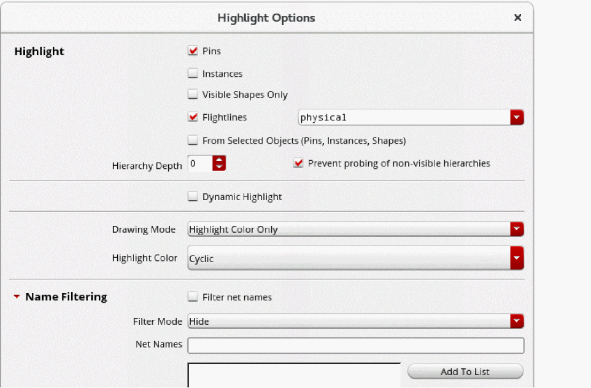

Probing Nets, Instances, Pins, and Shapes
Probing allows you to find and highlight certain types of objects from among all the objects present in a design. It lets you highlight the logical connectivity between objects. These objects include nets, terminals, paths, and instances. Probing also lets you select objects to highlight their corresponding elements in a different representation of the same design (schematic and layout windows).
You can use the environment variables,
To select the objects to be highlighted when you probe or select a net, instance, pin, or shape:
-
In the layout window, choose Options – Highlight.
This displays the Highlight Options form. -
In the Highlight section, set the following:
- Select the Pins and Instances check boxes if you want to highlight pins and instances on the probed/selected nets.
- Select Flightlines if you want all shapes and opens on the probed net to be highlighted.
- Select the Visible Shapes Only check box if you want to highlight only the shapes and pins on the visible layers.
- Set the Hierarchy Depth to specify the depth up to which you want to display net probing.
- Select Dynamic Highlight to highlight any object over which you hover the pointer.
- Select the drawing layer to be used for highlighting the nets.
- From Highlight Color, select the Cyclic option to use the next color for highlighting subsequent objects.
- In the Name Filtering section, selectively display or hide the probes only for the specified list of nets.
- Click Apply.
After configuring the options in the Highlight Options form, you can probe nets, shapes, pins, and instances using either pre- or post-selection mode.
Related Topics
Probing Objects Using Pre-Selection Mode
Probing Objects Using Post-Selection Mode
Return to top